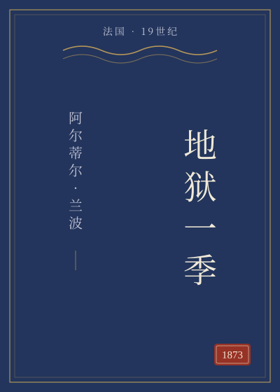
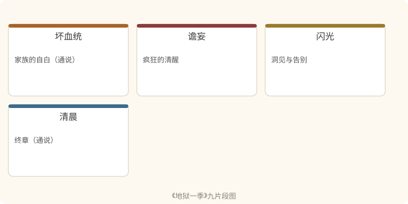

地狱一季
一、基本信息
| 作者 | 阿尔蒂尔·兰波 |
|---|---|
| 成书/出版 | 1873年（Britannica：Une Saison en enfer——'Consisting of nine fragments of prose and verse'） Arthur Rimbaud — Encyclopaedia Britannica（百科全书） |
| 国别/地区 | 法国 |
| 时代 | 近代 · 19世纪 |
| 体裁 | 散文诗集 |
| 语言 | 法语 |

《地狱一季》九片段图（主题·结构图）
二、创作背景
Britannica（B310）：'Consisting of nine fragments of prose and verse'——examining 'Rimbauds search for experience and his relationship with Verlaine'（探察兰波的求索经历及与魏尔伦的关系——B310）。
作者（B310）：'Many 20th-century poets were influenced by the Dionysian power of his verse'；'a founding father of modernism'（B310 Legacy 语境）。
三、内容脉络
九个片段：坏血统/疯狂的眩晕/疯狂的重罚/谵妄I-II/不可能/闪光/清晨（篇名通说待核）。
四、主要人物表
| 人物 | 身份 | 说明 |
|---|---|---|
| 兰波 | 自白者 | （B310 语境） |
五、主题与艺术特点
- '通灵者'的自白与告别（通说待核）。
- '理性的人们'？——不：诗的自审（通说待核）。
- 告别文学（1873年后弃文——B310 语境）。
六、影响与评论
- Britannica：'Many 20th-century poets were influenced by the Dionysian power of his verse'（B310）。
Arthur Rimbaud — Encyclopaedia Britannica（百科全书） - Britannica：'a founding father of modernism'（B310 Legacy 语境）。
Arthur Rimbaud — Encyclopaedia Britannica（百科全书）
七、阅读建议
难点
- 散文诗的自白语调。
- 1873年弃文背景。
- 《地狱一季》（人民文学出版社/上海译文版本，通说待核）。
- 法文原版（公有领域）。
先《醉舟》后本作；再读《彩画集》。
八、待核实
- 1873年（布鲁塞尔自印说）核对。
- 九个片段篇名核对。
- '通灵者书信'（1871年5月两封——B310 已载日期）核对。
本页主要来源
阿尔蒂尔·兰波的其他收录作品：地狱一季